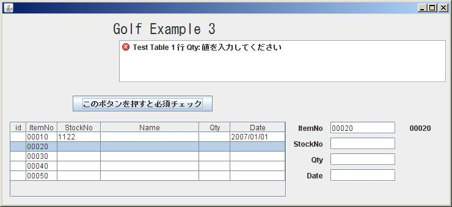

- それでは、次のExample ３を見てみましょう。Launcher画面のExample ３を押すと下記画面が表示されます。
- 一番上の行をクリックして見て下さい。下記の様に、右のItemNo欄に「00010」と表示されます。
それでは、StockNoに「１１」と入力して、Tabを押して下さい。
- Validatorにより、Errorとなりますね。
それでは、StockNOは、「１１２２」として、次にDate欄に「07/1/1」といれて、「tab」を押して下さい。
- 「2007/01/01」に自動的に変換されましたね。それでは、２行目をクリックしてみましょう。

- 右側の表示が、２行目に連動しましたね。
ここで、「このバタンを・・・・」を押すと、必須Checkがかかり、以下の画面が表示されます。

- この様に、Tableと連動するJTextFieldが簡単にできます。
なお、Qty欄は、LongFieldという、Golfのコンポーネントで、整数しか受け付けません。
数字、+-の記号以外を入れても、無視されます。
また、initBindingで、右寄せになるよう設定してあります。
浮動小数をあつかう、DoubleFieldも用意してあります。
多桁の数字を扱うため、近いうちに、BigDecimalも用意しようと思います。
なおNetBeansでは、自作のコンポーネントも簡単にパレットに追加できます。
メニューからもできますが、ソースを右クリックして、「ツール」「パレットに追加」
が簡単です。ソースから直接編集画面のDrag and DropしてもOKです。これは感動もの。
それでは、Programをみてみましょう。
public class Example3Frame extends javax.swing.JFrame implements GolfFormnterface {
private FormManager formManager = null;
private GolfTableModel golfTableModel = new GolfTableModel();
private TableBindHandler table1BindHandler = null;
public void initBinding() {
formManager = new FormManager(this);
formManager.init();
formManager.createReportList(jScrollPane1);
formManager.setValidationFromCsvResource("Example3_bind.csv");
formManager.setBindFromCsvResource("Example3_bind2.csv");
jTable1.setSelectionMode(ListSelectionModel.SINGLE_SELECTION);
formManager.SetTableColumnFromCsvResource(
jTable1, "Test Table", golfTableModel, "Example3_table1.csv");
for (int i=0; i < 5; i++) {
addNewRow();
}
TableUtil.SetPreferedColumnWIdth(jTable1, new int[]{15,40,60,150,40,80 });
table1BindHandler = GolfBindingUtil.createTableBindHandler (golfTableModel);
GolfBindingUtil.bindTableRowColumn(table1BindHandler,
golfTableModel,"jTextField1","ItemNo");
GolfBindingUtil.bindTableRowColumn(table1BindHandler,
golfTableModel,"jTextField2","StockNo");
GolfBindingUtil.bindTableRowColumn(table1BindHandler,
golfTableModel,"longField1","Qty");
GolfBindingUtil.bindTableRowColumn(table1BindHandler,
golfTableModel,"jTextField4","Date");
longField1.setHorizontalAlignment(JTextField.RIGHT);
}
private void jTable1MouseClicked(java.awt.event.MouseEvent evt) {
addNewRowWhenCursorLastRow();
}
private void jTable1MouseReleased(java.awt.event.MouseEvent evt) {
table1BindHandler.mouseReleased(evt);
}
private void jTable1KeyReleased(java.awt.event.KeyEvent evt) {
table1BindHandler.keyReleased(evt);
if (TableUtil.checkRowDownEvent(evt)) {
addNewRowWhenCursorLastRow();
}
}
private void jButton1ActionPerformed(java.awt.event.ActionEvent evt) {
formManager.getFormValidationManager().
ValidateWithForceTableEditEnd(golfTableModel, true);
}
- 赤字の所が、Example２に追加した所です。
TableBindHandlerが新たに追加になり、これがTableとJTextFieldのBindingを管理しています。
Validatorは、基本的にTableの項目に設定します。JTextFieldにも設定しても構いませんが、
エラーが２重に表示されてしまいます。ただし、ShortDateやLognDateのFormatterとして、機能
させるため、DateValidatorは、JTextFildにも設定した方が良いと思います。
それでは、次のExampleで、画面の一部のみを置き換える機能を見ていきましょう。
- Example ４へのリンク
- GOLF HOMEへのリンク
|